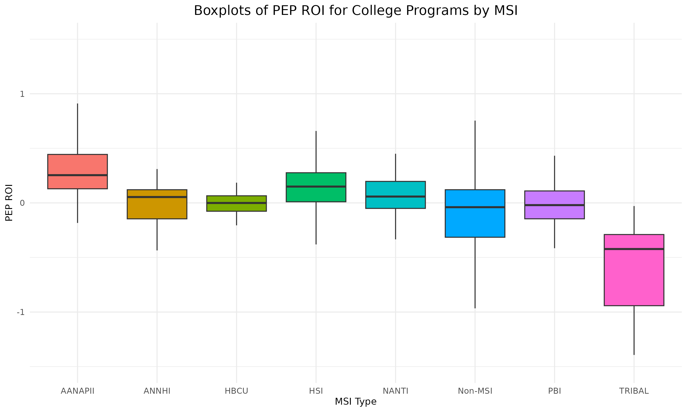
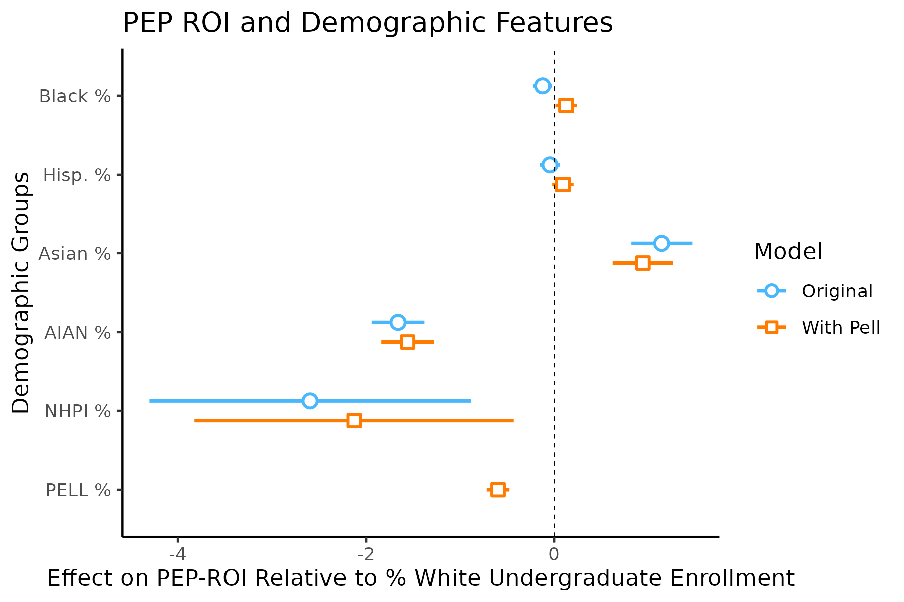
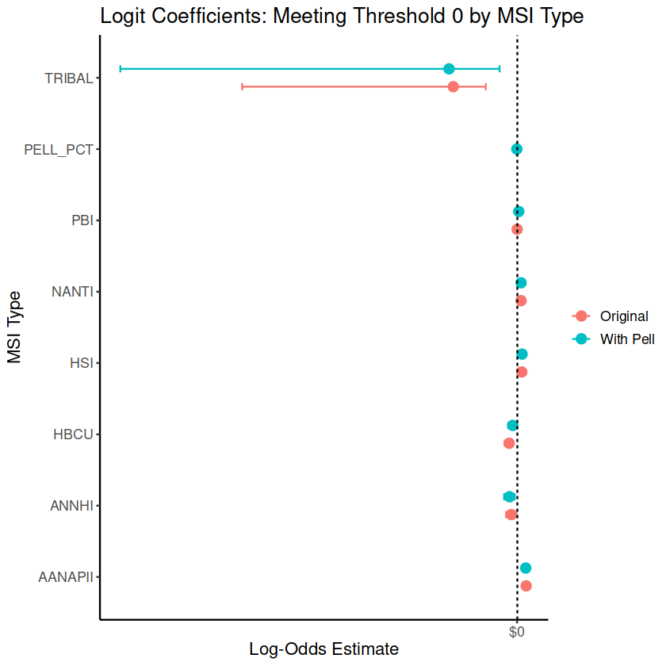
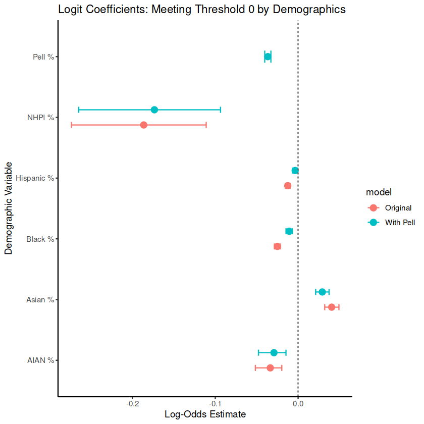
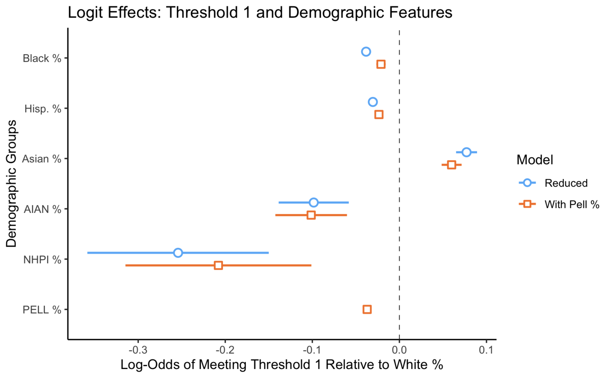

An Analysis of R.O.I. Calculation Methods for Institutions of Higher Education
DATASCI 192A/B Final Report (Spring 2025)
Authors: Michelle Chen, Sebastian Kane, and Larissa Lauer
Introduction
EdTrust’s mission is to advance policies and practices to dismantle the racial and economic barriers
embedded in the American education system. We approached our research project with the goal of addressing
larger systemic issues with American higher education.
Return on investment (ROI) frameworks inform educational policies and help prospective students and their
families plan for higher education, so the way in which ROI is calculated and presented is extremely important
in determining which institutions receive more or less funding, resources, and students. Current ROI frameworks
largely focus on a purely economic model (most often, a debt-to-earnings ratio), which neglects student body
characteristics that also influence post-graduate success.
Our research fills a critical gap in existing ROI frameworks by specifically examining how the calculation of ROI
changes for Minority-Serving Institutions (MSIs) and Predominantly White Institutions (PWIs) when controlling for
key student body characteristics. Traditional models assess ROI at the institutional or program level but often
overlook how institutional type intersects with student demographics, socioeconomic status, and structural barriers
like labor market discrimination. By integrating factors like student body characteristics into our analysis, we aim
to determine whether disparities in ROI persist due to institutional differences or broader systemic inequities.
Our refined approach provides a more accurate and equitable measure of postsecondary value, ensuring a fairer
assessment of institutions that serve historically underrepresented students. Our findings would not only sharpen ROI
calculations but also inform policy debates on funding and resource allocation between MSIs and PWIs.
Partnership with Edtrust
Institution-Level Data
The following dataset provides information on the ROI of colleges and universities in the United States for each framework of interest. We include other relevant variables, such as the percentage of students receiving Pell Grants (an indicator of socioeconomic status), MSI type, and racial demographics. We primarily relied on College Scorecard data to construct this dataset and calculate the measures of ROI.
How to Use This Dataset
You can sort the columns of this table in ascending order and descending order to see which institutions have the
most extreme values. If you are interested in recreating or further developing our regression analysis, click
“Download Dataset” below the table to save a copy of it to your device.
Prospective students and parents may also be interested in the ROI of specific schools. These schools can also be
found using the search bar. See the discussion below for details on interpreting specific ROI frameworks.
We want to caution against blindly relying on ROI measures as indicators of a school’s quality or of the return
a student should expect from attending. Indeed, a central finding of our research is that existing ROI frameworks
can conflate the individual return on investment a student can realistically expect with the advantages already conferred
by their socioeconomic background. In other words, a high ROI may indicate that an institution effectively contributes to
student success and career outcomes or that its student body comes from backgrounds that often lead to higher earnings
regardless of the institution attended. In the absence of detailed individual-level data on earnings, background, and
college of attendance, more work is needed to produce informative and accurate measures of ROI that do not rely on
questionable assumptions.
Third Way's Price to Earnings Premium (PEP) Model
Calculation Framework
Third Way’s Price-to-Earnings Premium (PEP) Model is a way to understand whether going to a specific college is worth the cost, by calculating how long it would take for the average student who graduates in 4 years to recoup, or “earn back” the money they spent on their degree. For some schools, the average student is never expected to recoup the cost of their degree, because graduates don’t make more money than the average high school graduate in their state; in other words, students from these schools make the same amount of money with their degree as they would have had they never graduated college in the first place.
The original calculation, created by Third Way, uses the following formula:
$$\textbf{Number of years to recoup net cost} = \frac{(\text{Total average net price} \times 4 \text{ years})}{(\text{Post-enrollment earnings} - \text{Typical high school salary})}$$
This calculation results in negative results for institutions where the typical salary of a graduate from that institution is less than the typical salary of a high school graduate in the same state. Therefore, if an institution has a negative PEP-ROI score, the average graduate of this institution will never recoup the cost of their degree. The more negative the number, the larger the gap in earnings for graduates of the institution and high school graduates. If the institution has a positive PEP-ROI score, the value of the score translates to the number of years it would take the average student to recoup the cost of their credential.
For this analysis, we consider the “best value” schools to be ones where the cost of the credential is recouped quickly, in just a few years. This means that the strength of an institution’s PEP-ROI score increases as its number shrinks towards 0 years to recoup cost. However, that pattern changes at 0, since a PEP-ROI score less than 0 is a very weak score. This feature of Third Way’s original calculation of PEP-ROI scores makes it much harder to conduct statistical analysis of institutions’ ROI data.
To deal with this, we made an adjustment to the original formula. By taking the inverse of the PEP-ROI score (so 1 divided by the original score), we get scores such that an increase in modified PEP-ROI score translates to a “better value” for an institution. This solves the problem we were facing with the original PEP-ROI score because the interpretation of our modified PEP-ROI scores is consistent for both positive and negative values.
To recap, our modified calculation for PEP-ROI is:
$$\textbf{Modified PEP-ROI} = \frac{(\text{Post-enrollment earnings} - \text{Typical high school salary})}{(\text{Total average net price} \times 4 \text{ years})}$$
Relevant Variables
To build this model, we used data from two main sources:
College Scorecard Data (Institution-level data):
STABBR: The state where the college is located.MN_EARN_WNE_P10: Average earnings of college graduates 10 years after they started college.NPT4_PUB: Average yearly cost of attendance for public colleges.NPT4_PRIV: Average yearly cost of attendance for private colleges.
We multiplied the average yearly cost by 4 to estimate the full cost of a 4-year degree.
Third Way 2023 Data:
Median State Salaries with Positive Earnings (High School Diploma or Equivalent): This gives the typical income for high school graduates in each state, which we use for comparison.
Further Analysis of the PEP Model
Trends across Minority-Serving Institutions
Figure 1: Distribution of PEP-ROI by MSI Type
This boxplot shows the distribution of PEP Return on Investment (ROI) values across different types of Minority Serving Institutions (MSIs) and Non-MSIs. Each box represents the interquartile range (IQR) of PEP-ROI values for that group, with the thick horizontal line indicating the median.
- AANAPII and HSI institutions tend to show slightly positive median PEP-ROI values, indicating better returns compared to others.
- TRIBAL colleges show a notably lower distribution, with a median well below zero, suggesting significantly lower PEP-ROI performance.
- Non-MSI schools center closer to zero, with a broader distribution indicating varied outcomes.
Trends across Demographic Groups
Figure 2: PEP-ROI and Demographic Features
This plot presents regression coefficients for demographic features predicting PEP-ROI, comparing two models: Original (blue) and With Pell (orange). Each point shows the estimated effect of a 1 percentage point increase in demographic composition on PEP-ROI, relative to White undergraduate enrollment. Error bars indicate confidence intervals.
- Higher Asian % is associated with significantly positive effects on PEP-ROI in both models.
- Higher AIAN %, NHPI %, and Black % are associated with negative effects, particularly NHPI, which shows large uncertainty due to a small sample size.
- Hispanic % shows near-zero effect in both models.
- When Pell eligibility is added (orange), effect sizes are somewhat attenuated, suggesting that Pell status mediates part of the relationship between race/ethnicity and ROI.
- The PELL % variable itself has a negative coefficient, suggesting that institutions serving more Pell-eligible students tend to see lower PEP-ROIs, holding other factors constant.
This plot underscores how student body composition relates to institutional returns and suggests that socioeconomic factors (like Pell eligibility) partially account for racial/ethnic disparities.
Postsecondary Value Commission ROI Frameworks
In the following sections, we highlight the major results from our analysis of ROI frameworks from the Postsecondary Value Commission. These frameworks have two parts: an institution’s ROI score and a binary indicator for whether the school meets a certain threshold. For each framework, we first ran an ordinary least squares (OLS) regression model to measure the relationship between MSI type and ROI. We consider the following MSI designations:
- Historically Black College or University (HBCU)
- Predominantly Black Institution (PBI)
- Alaska Native-/Native Hawaiian-Serving Institution (ANNHI)
- Tribal College or University (TRIBAL)
- Asian American-/Native American-Pacific Islander-Serving Institution (AANAPII)
- Hispanic-Serving Institution (HSI)
- Native American Non-Tribal Institution (NASNTI)
We then ran that same model but included an additional variable for the percentage of students at an institution that receive a Pell Grant, which is a poxy for the student body’s general socioeconomic status. The coefficient for Pell Grant percentage can be interpreted as the expected increase in ROI for a one percent increase in the percentage of students receiving Pell Grants, holding other variables constant. We are particularly interested in the difference between the Pell Grant and non-Pell Grant models. If the coefficients for MSI variables shift between models, this would suggest that some of the apparent differences in ROI associated with MSI status might actually be due to differences in the economic background of students.
We also considered student body race and ethnicity variables instead of MSI type indicators. Because the classification of schools into different MSI types is based on the percentage of students from certain backgrounds (generally ≥ 25%, except for HBCUs & TCUs), it may be more informative to use demographic percentages rather than simplified dichotomous variables. These variables can better incorporate the continuous variation in student body composition across institutions and provide a more nuanced understanding of how demographic features relate to ROI. We used the following demographic variables: Black %, Hispanic %, Asian %, AIAN % (American Indian or Alaska Native), and NHPI % (Native Hawaiian or Pacific Islander). Similar to Pell percentage, coefficients can be interpreted as the expected increase in ROI for a one percent increase in the percentage of students of a given race/ethnicity at a school, controlling for the other variables.
We also performed similar analyses using logit regression to model whether a school meets an ROI threshold as a function of Pell percentage, MSI type, and race/ethnicity percentages. While these threshold-based approaches offer a straightforward way to evaluate institutional performance, they simplify the continuous ROI metrics into binary outcomes, potentially masking meaningful differences across schools. For this reason, we prioritize the OLS results and recommend against overly relying on dichotomous variables when analyzing ROI.
Interpretation of coefficients for logit models is less straightforward than with OLS models. They now represent the log odds of a school meeting the threshold. To provide some intuition for interpreting these log odds, we outline how different log-odd values translate into odds. A log odds of 0 corresponds to a 50/50 chance of meeting the threshold. 0.2 corresponds to about a 5:4 odds of meeting the threshold, and -0.2 to about a 4:5 odds. Similarly, 0.4 corresponds to about a 3:2 odds, and -0.4 to about a 2:3 odds.
In the rest of this article, we outline each ROI framework, briefly review our main findings, and, at the end, provide some overall takeaways.
Postsecondary Value Commission: Threshold 0
Calculation Framework
Minimum Economic Return: “A student meets this threshold if they earn at least as much as a high school graduate plus enough to recoup their total net price plus interest within ten years.” (p. 40)
An institution meets Threshold 0 if:
10 * (Median salary after higher education degree) ≥
10 * (Median state-level salary for high school degree earners) +
(Average Net Price * Average Time to Credential)
Regression Models
We estimated how controlling for the share of Pell Grant recipients affects the likelihood that different Minority‑Serving Institution (MSI) types meet Threshold 0.

We replace the MSI flags with continuous demographic shares—% Asian, % Black, % Hispanic, etc.—to see how each group’s concentration relates to earnings once Pell % is controlled. 
Postsecondary Value Commission: Threshold 1
Calculation Framework
IHEP Earnings Premium: “A student meets this threshold if they reach at least median earnings in their field of study (or, if field of study data is unavailable, the median earnings for the institution’s predominant degree type).” (p. 40)
Current Calculations
-
Earnings Premium:
Median post‑enrollment earnings at institution (10 years after entry) -
Meeting Threshold 1 (binary):
Earnings premium ≥ in‑state median earnings for people with bachelor’s degree
Extensions
Going forward, you might consider incorporating field‑of‑study data (despite its high missingness — 77.5 %) or differentiating by degree type (e.g., bachelor’s vs. associate’s) to refine the threshold calculation.
Threshold 1: Regression Models
Next, we estimate how controlling for the share of Pell Grant recipients shifts the relative earnings premium across different Minority‑Serving Institution (MSI) types.

- HBCUs: Move from underperforming to outperforming non‑MSI schools (≈ +$7,000) once Pell % is included.
- PBI: Also see a noticeable improvement.
- HSI & TCU: Remain largely unchanged.
- ANNHI, NANTI, AANAPII: Experience a modest decrease (≈ $2,000).
Overall, the impact of controlling for Pell % is heterogeneous. Because MSI classification is based on whether each subgroup exceeds a fixed threshold (typically ≥ 25 %), using continuous demographic percentages could yield more nuanced insights than a simple binary flag.
Threshold 1: Regression Model with Demographics
We replace the MSI flags with continuous demographic shares—% Asian, % Black, % Hispanic, etc.—to see how each group’s concentration relates to earnings once Pell % is controlled.

Despite the smaller x-axis in this new figure, the effects of demographic percentages are still quite
substantial. For example, a 1% increase in Pell students is associated with a $320 decrease in
expected earnings. Assuming an approximately linear relationship (as tests of curvilinear models
suggest the linear model provides a reasonably good fit), a school with 30% more students with Pell
Grants is associated with students earning nearly $10,000 less on average ten years after enrollment.
Aside from Asian students, controlling for Pell % amplifies the positive association
between each demographic share and earnings relative to the White student baseline. These
findings provide strong evidence that this ROI measure disadvantages schools with higher
minority populations by confounding return on investment with the effects of
prior socioeconomic status.
Threshold 1: Logit Regression Model with Demographics
We then modeled the log-odds of meeting threshold 1 as a function of demographic features using logit regression. See the Postsecondary Value Commission section for a review of how to interpret the coefficients.

Overall, the effect of Black and NHPI percentage marginally improved after controlling for Pell percentage, the
other effect of Asian percentage slightly decreased, and the effects of the variables stayed about constant.
Because the OLS model uses the full continuous ROI measure rather than a binary threshold, it retains more information and
offers more interpretable estimates of the relationship between demographic composition and ROI. We therefore find
its results to be most informative and useful.
Postsecondary Value Commission: Threshold 2
Calculation Framework
Earnings Parity: “This threshold measures whether students of color, students from low-income backgrounds, and women reach the median earnings of their systemically more advantaged peers (White students, high-income students, or men).” (p. 40)
An institution meets Threshold 2 if both conditions are true:
Regression Models
Conclusions
While regional labor market conditions and institutional characteristics explain
much of the variation in performance on existing ROI frameworks, persistent racial disparities
suggest that structural inequities continue to shape the economic
value of higher education for
students of color.
Before we end, we want to address some of the limitations of our work. Assessing the value of institutions through purely economic lens can disregard the soft value that they provide, especially at MSIs, which are especially important for cultural preservation, cultivating identity, and fostering social capital. Working with thresholds presents a unique problem of creating a binary, which can be an oversimplification of the true effect that they provide. Finally, one of the problems we ran into during our work was lack of available data: for example, programs within schools are often not big enough to not be privacy suppressed. We also discovered a lack of data on external factors affecting performance on ROI frameworks (ex. labor market conditions on the county-level).
However, we believe that addressing these challenges presents an exciting opportunity for future research and development, and we are excited for the potential of enhancing existing ROI frameworks to better capture the true impact of higher education.
Summary of the relationship between MSI status/demographics on ROI.
Summary of effect of controlling for socioeconomic status (i.e., Pell %) on the model.
Discuss usefulness of continuous scale ROI and demographic measures.
Summary of implications for future research and policy.
CONCLUSIONS